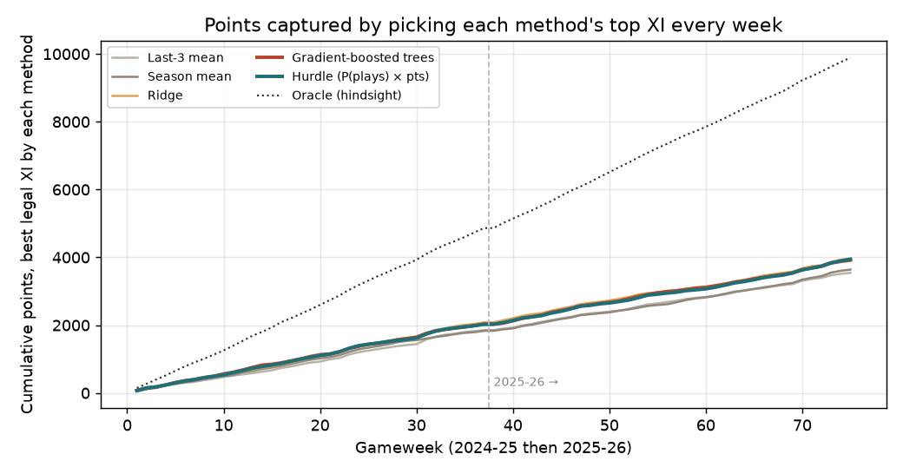
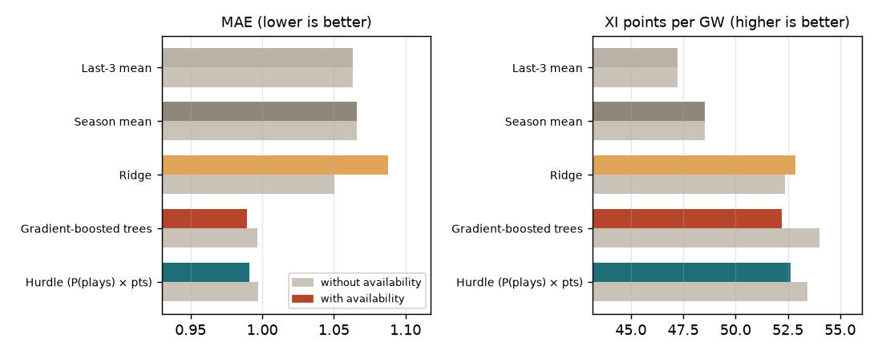

Fantasy Premier League player-performance models
Predict the fantasy points of each football player for the next week. Then test if the predictions are better than simple rules.
Problem
Each week, more than 6 million Fantasy Premier League (FPL) managers select a team of real football players, and the team gets the points that these players earn in the matches. I finished in the top 12% with this approach. Each week I predicted the points of each player from form features and fixture features, and then I selected the eleven players. At that time I did the work manually, with the member data of Fantasy Football Scout. This repository builds the same approach again with public data. The code is reproducible and has a walk-forward backtest, thus a person can examine the method.
Question
How many points does each player score in the next gameweek? And does a model select a better team of eleven players (XI) than simple rules?
Constraint
Each feature must be available before the deadline. The backtest must use the models in the same way as a manager: train on the past, predict the next week, and then repeat.
Data
- Unit
- One row for each player and each match, from the season 2022-23 to now (114,202 rows). The data comes from the vaastav archive of the official FPL API. The earlier seasons have no expected goals and no expected assists, thus they are not in the data set.
- Target
- The FPL points of the player in that match.
- Features
- There are 79 features, and all of them are available before the deadline. The form features use the last 3, 6, and 10 matches and also the full season: points, minutes, starts, goals, assists, bonus points, expected goals, expected assists, and the influence, creativity, and threat index of FPL. Each form feature has a shift of one match, thus the result of a player is never in the features of the same match. The other features are the strength of the team and of the opponent, home or away, the days of rest, the price, the ownership, the transfers, the position, and the availability at the deadline.
- Availability
- The official FPL API, which is the public data interface of the game, gives the injury status only for the current week. I thus rebuilt the history from the git history of the archive. For each gameweek I used the last weekly snapshot before the first match of that gameweek. This method gave 152 gameweeks. The players with a flag for no availability get an average of 0.001 points.
Approach
- Walk-forward, not cross-validation
For each of the 75 gameweeks in the seasons 2024-25 and 2025-26: train on all the matches that started before the gameweek, predict the gameweek, and then continue with the next gameweek. A random split is not correct, because the later form of a player then goes into the earlier predictions.
- Baselines first
The mean of the last 3 matches, and the mean of the season. A manager makes this calculation by eye.
- Three learned models
Ridge regression. Gradient-boosted decision trees (300 rounds, 31 leaves, minimum 100 samples in a leaf, with L2 regularisation). A hurdle model, which multiplies a classifier for does the player play? and a regressor for the points if the player plays. Most of the variance of the FPL points comes from the question if the player is on the field.
- Score what a manager cares about
The error for each match: the mean absolute error, the root-mean-square error, and the Spearman rank correlation. Also the points of the best legal team of eleven players, in the formation 1-4-4-2, for each week. An oracle that selects the team with the knowledge of the results gives the maximum, thus the distance to the maximum is visible.
- Check the data before believing the result
Two checks: one for the missing values and one for leakage. They were more important than the models (see below).
Results

| Method | MAE (mean abs. error, points) | Spearman rank corr. | Starting-XI points per gameweek | vs. last-3 baseline (95% CI) | Share of oracle |
|---|---|---|---|---|---|
| Last-3 mean (baseline) | 1.063 | 0.721 | 47.2 | Baseline | 35.8% |
| Season mean (baseline) | 1.066 | 0.685 | 48.5 | +1.3 [−2.8, +5.0] | 36.8% |
| Ridge | 1.088 | 0.710 | 52.9 | +5.6 [+2.4, +8.7] | 40.1% |
| Gradient-boosted trees | 0.989 | 0.725 | 52.2 | +5.0 [+1.5, +8.4] | 39.6% |
| Hurdle | 0.991 | 0.719 | 52.6 | +5.4 [+1.9, +8.9] | 39.9% |
| Oracle (hindsight) | Not applicable | Not applicable | 131.9 | Not applicable | 100% |
The learned models get approximately 5 more points for each gameweek than the naive baselines, which is approximately 10%, and their error is approximately 7% smaller. The result is the same in the two seasons. The last column compares each method with the last-3 baseline for each gameweek and calculates the mean difference with a bootstrap of 10,000 samples. The interval of each learned model excludes zero, but the interval of the season-mean baseline does not. The three learned models are equal inside the noise, thus the features are the limit and not the algorithm.
Finding 1: the expected-points column of the archive is contaminated
FPL publishes its own expected points for each player, which is its forecast of the points of the player. The archive keeps this value in the column xP. It is the obvious benchmark, and an early version used it as a baseline and as a feature in a stack. That version got 87% of the points of the oracle, which is too good. Two checks show the cause:
- A missing value became a zero. In 27 of the 38 gameweeks of the season 2025-26, the column is 0 for almost all the players, and also for the players who started the match and scored points. These are the weeks where the scraper collected no data, and not predictions of zero points.
- Information from after the match. For the players who started a match, the archived
xPhas a correlation of 0.50 with the true points, but the best true pre-match feature has a correlation of only 0.15. Also, inside the season of one player, the value is 1.3 points above the average of that player exactly in the matches where the player scored. This agrees with a collection of the column after the gameweek, when the form value of FPL already contained the points of that week.
For this reason, xP is not in any result above. The code stays in the repository, thus a person can do the test again.
Finding 2: the injury data did not help

The availability looked like the most valuable missing signal, because a player who does not play gets approximately 0 points. The ablation gives a different result: the mean absolute error changes from 0.997 to 0.989 and the rank correlation from 0.714 to 0.725, but the points of the eleven players change from 54.0 to 52.2. This difference is inside the weekly noise, because the paired difference is −1.8 points for each gameweek, with a 95% confidence interval from −4.0 to +0.3. The intervals of the ridge model and of the hurdle model also contain zero. The snapshots have an average age of ten days, and the players that each method selects are regular starters whose form features already show their availability. A better test needs snapshots at the time of the deadline, which do not exist for the past, thus the pipeline must collect them from now.
What I'd do differently
Snapshot at the deadline
A scheduled job that reads the FPL API at each deadline gives an availability that is some hours old and not some days old. This is the test that I could not do.
A clean external benchmark
The odds of the bookmakers, or the expected points of a different supplier, collected before each deadline. This value can then replace the contaminated xP as the benchmark.
Optimise the squad, not the starting eleven
Select the team with the true constraints of FPL: the budget, the transfers, and the captain. This step closes the loop with the method that I use when I play.
Position-specific models
Goalkeepers and forwards earn their points in different ways. One model with a one-hot code for the position can thus lose information.
Code & artifacts
lagnis337/fpl-player-models contains the data download, the reconstruction of the availability, the feature build, the models, the walk-forward backtest, the ablation, and the figures. Six commands in the README give each number on this page again.